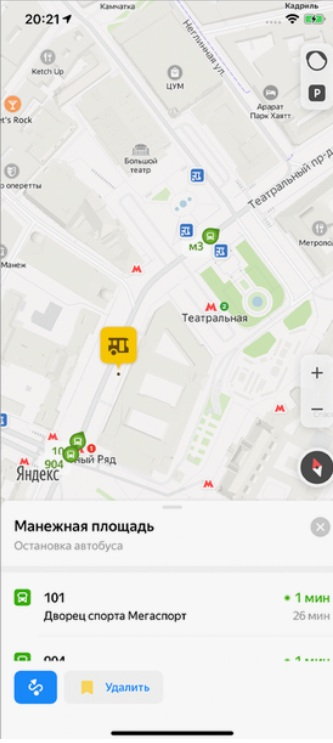
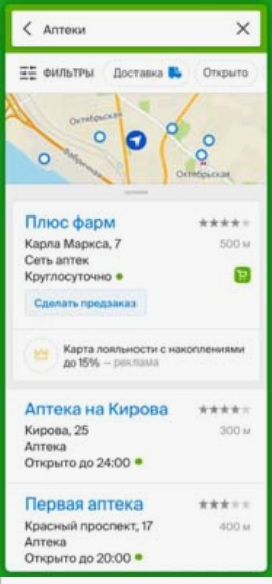
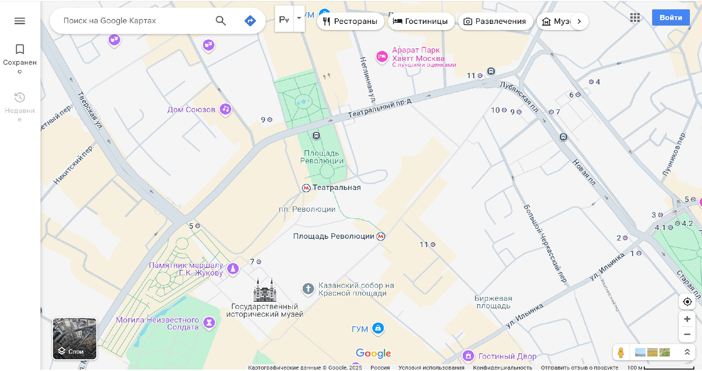

Электронная карта — картографическое изображение, сгенерированное на основе данных цифровых
карт и визуализированное на видеомониторе компьютера или видеоэкране другого устройства (например,
спутникового навигатора).
14
Являясь средством оперативного контроля, каждая конкретная электронная карта существует лишь в определённый
момент времени, как правило непродолжительный, пока видна на устройстве отображения. В этом их главное
отличие от прочих визуальных картографических материалов, визуализируемых на твёрдой подложке (бумага,
пластик) средствами графического вывода (например, принтерами).
Это значение лучше всего согласуется с самим словом «электронная», то есть получаемая посредством движения
электронов, что и происходит в работающем электронном устройстве.
Термины «Веб-ГИС» и «веб-картография» можно считать синонимами. Веб-ГИС использует веб-карты, и конечные
пользователи, занимающиеся веб-картографированием, приобретают аналитические возможности. Термин
«Location-based service» относится к веб-картографированию потребительских товаров и услуг.
Веб-картографирование обычно включает веб-браузер или другой пользовательский агент, способный
взаимодействовать c сервером в качестве клиента. Вопросы качества, юзабилити, социальных льгот и правовых
ограничений способствуют его развитию.
Появление веб-картографии можно рассматривать как новую важную тенденцию в картографии. До недавнего времени
картография ограничивалась несколькими компаниями, институтами и картографическими агентствами, для чего
требовалось относительно дорогое и сложное аппаратное и программное обеспечение, а также опытные картографы
и инженеры-геодезисты.
Веб-картографирование принесло много географических наборов данных, включая бесплатные (например, созданные
OpenStreetMap) и коммерческие, принадлежащие Navteq, Google, Яндекс, 2ГИС, Waze и другие. Был разработан и
внедрен ряд бесплатных программ для создания карт, а также коммерческие инструменты, такие как ArcGIS. В
результате, барьер для входа для обслуживания карт в Интернете был снижен.
Всего конкурентов на Российском рынке 3:
Яндекс с его Яндекс.Картами.
Их основные преимущества:- Обновляемость
- Регулярное обновление. С периодичностью раз в 2–4 недели.
- Растровые карты.
- На снимки, полученные со спутника, наносятся названия улиц, номера домов и т. п.
- Интеграция с другими сервисами Яндекса.
- Например, можно заказать такси через «Яндекс Такси», не покидая приложение.
Пример интерфейса приложения:
2ГИС
Их основные преимущества:- Интерактивный навигатор.
- Он позволяет выбирать оптимальные маршруты для автомобилей, общественного транспорта и пеших прогулок. Платформа предоставляет информацию о пробках, времени в пути и других важных факторах.
- Поиск мест и компаний.
- Сервис предоставляет информацию о компаниях, магазинах, ресторанах и других организациях, включая контакты, часы работы и отзывы посетителей.
- Умное аудиосопровождение.
- Умный аудиогид с голосами известных дикторов (таких как Николай Дроздов, Галина Юзефович и т. п.).
Пример интерфейса приложения:
Google с его Google Maps.
Их основные преимущества:- Глобальная база данных.
- Приложение обладает обширными точными картами для большинства регионов по всему миру.
- Интеграция с другими сервисами Google.
- Приложение интегрируется с другими сервисами Google, такими как Google Street View, что предоставляет пользователям дополнительные возможности для визуализации маршрутов и окружающей обстановки.
- Оффлайн-карты.
- Пользователь может скачать карту любой области (например, города и его пригородов) без ограничений.
Пример интерфейса приложения:
Apple с его Apple Maps.
Их основные преимущества:- Доступность на OC iOS/MacOS.
Приложение доступно исключительно для устройств Apple, что обеспечивает оптимизированный пользовательский опыт. - Интеграция с экосистемой Apple.
Приложение интегрируется с другими устройствами Apple, что предоставляет пользователям дополнительные возможности для визуализации маршрутов и окружающей обстановки. - Конфиденциальность и безопасность.
- Конфиденциальность. Apple уделяет большое внимание конфиденциальности пользователей. Данные о местоположении не передаются третьим сторонам и не используются для таргетированной рекламы.
- Анонимность. Apple Maps не требует регистрации аккаунта для использования, в отличие от Google Maps.